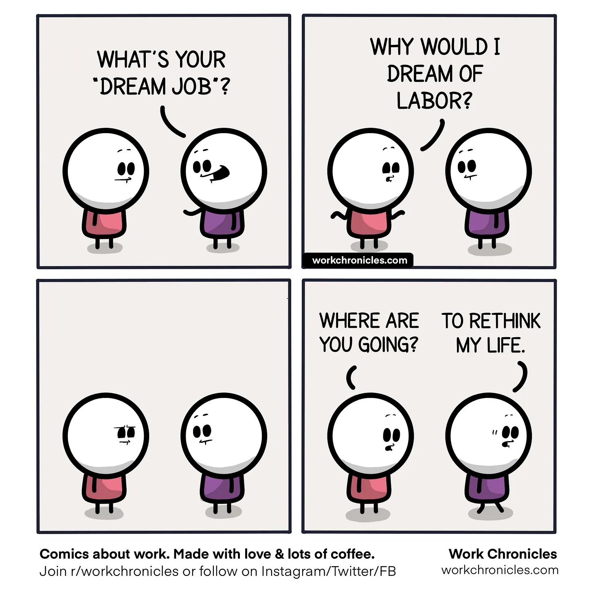

I quit my job two months ago. It was my second job at a startup and my third job ever in my eight year software engineering career. I am so glad that I left, but now I'm a little lost on what to do next.
When I first had the inkling that a change in scenery was in order, I tried to explore new opportunities while I was working. That proved really difficult with the demanding hours of my job and the general instability of the job market.
After a few uninspiring calls with recruiters, it became apparent that if I wanted to leave, I would have to leave without another job lined up. This was quite the predicament. In all my time working, I had never considered that I would voluntarily take a career break. It went against everything I was taught.
I was faced with the loud and obvious fears: Would I be able to find another job? Will I lose my skills and become irrelevant if I took an extended break? Could I even afford to stop working? What would I do with so much time off? Underneath that, however, were quieter, more sinister fears: Who am I without my job? What if I enjoyed unemployment so much that I never wanted to work again? How would I make a living?
This set of questioning was intriguing to me and is ultimately why I decided to quit. Whether I realized it at the time or not, deep down, I wanted to know who I would become if I didn't have a software engineering job, or any career in tech for that matter. After many conversations with the people closest to me, I realized that personally, now was as good a time as ever to find out. So I left.
What followed has been interesting, and mostly what you'd expect from someone who finally has a lot of free time after eight years.
First, I prioritized my health. I focused on eating a more balanced diet and keeping a consistenet sleep schedule. I also started strength training at home for the first time ever.
Second, I gave myself permission to spend unlimited time on my hobbies. I spent hours exploring new thrift stores in the city and went on hikes in the middle of the week. I picked up sewing more seriously, treating it almost like a fulltime job. I started keeping an eye out for community events I was interested in and actually going to them, something burnout prevented me from doing when I was working.
All of these activities left me feeling extremely fulfilled -- emotionally, mentally, and physically. Naturally though, in the quiet moments between these activities, my mind started to wander and I began to imagine what my next job might be.

The short answer is that I still don't know what I want to do next. Before I quit my job, I was asking myself the question: How can I sustain this career in tech? But now, after adequate rest and some separation, I am asking myself a different question: How can I build a career that lets me live the life I want?
This reframe feels like progress, and at the same time, it feels like a return to an past life. This was the same question I posed to myself in high school when I had to choose what to major in in college: Does a tech career let me live the life I want?
At the time, given what I knew, the answer was absolutely yes. I chose to major in computer science because I knew I wanted to "help people," an extremely vauge mission if I do say so myself, and I knew that of all my options, engineering came easiest to me and I frankly didn't want to work that hard to get better at something else. Tech sounded great! But now, eight years in industry and multiple roles and companies later, I am not so sure anymore.
Don't get me wrong, working in tech has given me a lot of what I was originally seeking. The financial stability, flexible lifestyle, and the general prestige that comes with a tech job are all things I have greatly benefited from. I attribute a lot of the gifts of my life to my career -- meeting my husband and friends, being able to afford therapy for the first time, having a home in a city I love, the list goes on and on.
But in other ways, especially in the last few years, it has felt like working in tech is preventing me from living a life aligned with my values. With the rise of AI-powered development, even basic values such as respect for human dignity or improving the world for the next generation seem to be in question. The older I get, the more aware of how little time I have on this planet, and I would rather not spend this time working on problems I not only don't care about but that I think are actively hurting the world.
So, here I am. I am extremely grateful to be able to take a step back from my career and reevaluate a decision I made at eighteen. I still want to "help people" but how that manifests into a job might look a little different this time around. I also want to honor what I've learned in my time off which is that I need time for creativity, connection, and curiosity in my daily life. It is ultimately what makes me feel alive.
Simply put, I want to have it all! I'm not sure how, but I'm not ready to give up yet. Here's to not knowing what's next 🍻.